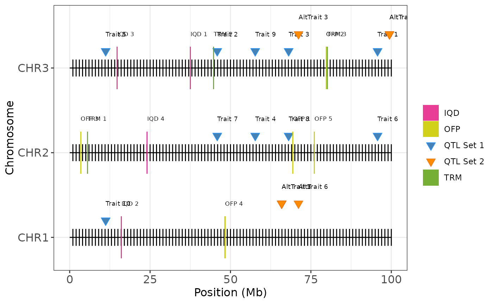

Plot Coverage Map with Candidate Gene Annotations
Source:R/plot_coverage_annotate.R
plot_coverage_annotate.RdPlot Coverage Map with Candidate Gene Annotations
Arguments
- map
A data frame with at least two columns:
chrom(chromosome ID) andposition(genomic coordinate in base pairs). This forms the base map.- limits
Optional data frame with chromosome end positions. If
NULL, limits are computed automatically.- qtls
Optional data frame of QTLs. Should contain
chrom,position, and optionallytrait.- qtls2
Optional second QTL set (e.g., from another population). Same format as
qtls.- prot1
First protein/gene annotation data frame. Should contain
chrom,position, andname.- prot2
Second protein/gene annotation data frame. Same format as
prot1.- prot3
Third protein/gene annotation data frame. Same format as
prot1.- labels
Optional vector of labels (length 1–3) for protein layers (e.g.,
c("OFP", "IQD", "TRM")).- protein_colors
Optional vector of fill colors for proteins, matching the order in
labels.- qtl_labels
Character vector of length 2 defining the legend labels for
qtlsandqtls2.- qtl_colors
Character vector of length 2 defining the fill colors used for the two QTL types.
- show_labels
Logical; whether to display text labels for QTL traits and protein names (default:
TRUE).
Details
Visualizes chromosome positions, QTLs, and gene of interest annotations on a multi-chromosome physical map. Useful for displaying genomic regions of interest, highlighting genetic features such as QTLs and candidate genes or protein families.
Examples
# Simulated example
set.seed(123)
# Create basic map for 3 chromosomes
example_map <- data.frame(
chrom = rep(paste0("CHR", 1:3), each = 100),
position = rep(seq(1e6, 100e6, length.out = 100), 3)
)
# QTL sets
example_qtls <- data.frame(
chrom = sample(paste0("CHR", 1:3), 10, replace = TRUE),
position = runif(5, min = 1e6, max = 100e6),
trait = paste("Trait", 1:10)
)
example_qtls2 <- data.frame(
chrom = sample(paste0("CHR", 1:3), 6, replace = TRUE),
position = runif(3, min = 1e6, max = 100e6),
trait = paste("AltTrait", 1:6)
)
# Protein annotations
ofp_data <- data.frame(
chrom = sample(paste0("CHR", 1:3), 5, replace = TRUE),
position = runif(5, 1e6, 100e6),
name = paste("OFP", 1:5)
)
iqd_data <- data.frame(
chrom = sample(paste0("CHR", 1:3), 4, replace = TRUE),
position = runif(4, 1e6, 100e6),
name = paste("IQD", 1:4)
)
trm_data <- data.frame(
chrom = sample(paste0("CHR", 1:3), 3, replace = TRUE),
position = runif(3, 1e6, 100e6),
name = paste("TRM", 1:3)
)
# Plot annotated coverage map
plot_coverage_annotate(
map = example_map,
qtls = example_qtls,
qtls2 = example_qtls2,
prot1 = ofp_data,
prot2 = iqd_data,
prot3 = trm_data,
labels = c("OFP", "IQD", "TRM"),
qtl_labels = c("QTL Set 1", "QTL Set 2"),
qtl_colors = c("steelblue", "darkorange"),
show_labels = TRUE
)
